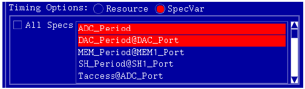
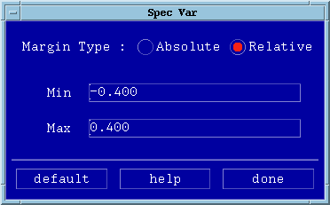

Spec Variables
- In the Selections panel, sub panel Timing Options or Level Options select the SpecVar radio button.
- Click the All check box or select the spec variables you want to use
for the pin margin test.
An example is shown in the figure below, which shows the selection of timing spec variables.

- From the Settings drop down menu select Timing Spec Vars
or Level Spec Vars.
The window shown in the figure below will appear and you can then define the margins applicable to the spec variable that you have chosen. See Example: Absolute and Relative Settings.
